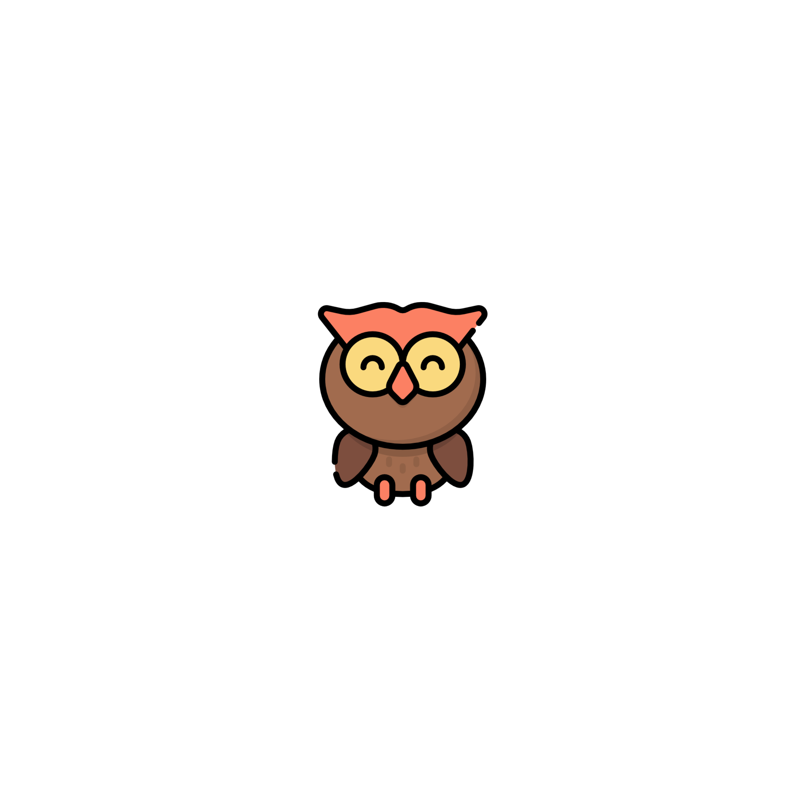

<ion-app>
  <div *ngIf="this.showSplash" class="splash">
    <div class="spinner" [ngClass]="{
      'spinner-landscape': this.platform.isLandscape(),
      'spinner-portrait': !this.platform.isLandscape()
      }">
    </div>
    <div class="ld ld-rush-rtl spinner" style="animation-duration:2.0s"[ngClass]="{
      'spinner-landscape': this.platform.isLandscape(),
      'spinner-portrait': !this.platform.isLandscape()
      }">
    </div>
  </div>
  <ion-router-outlet></ion-router-outlet>
</ion-app>
